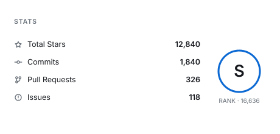
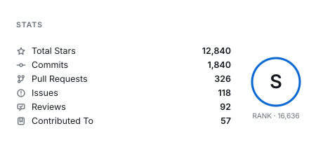
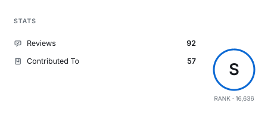
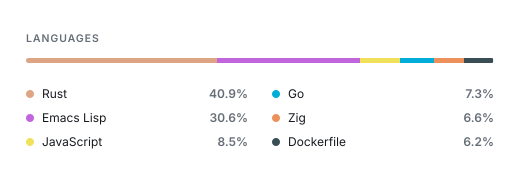
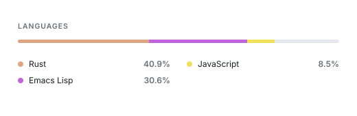
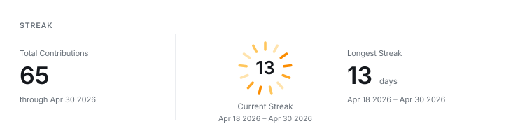
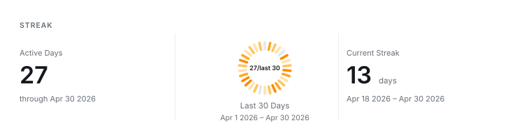

Configuration
What each panel reports, and which repositories count towards a language.
Panel Content#
Each panel decides what it reports. The defaults are what the card has always shown, so none of this needs configuring.
Stats rows#
Six figures are collected, and all six already feed the rank score. Four are listed by default; --stat-rows chooses which ones appear and in what order.
| Name | Row |
|---|---|
stars | Total Stars |
commits | Commits |
prs | Pull Requests |
issues | Issues |
reviews | Reviews |
repos | Contributed To |

Stars, commits, pull requests, issues
--stat-rows stars,commits,prs,issues,reviews,repos
Reviews and repositories contributed to as well
--stat-rows reviews,repos
A short list spreads out
Rows share the height the panel has, so a longer list sits closer together, down to a floor that keeps two rows from touching. A list must name at least one row and cannot name the same row twice.
Language rows#
--language-rows sets how many languages the panel lists, from 1 to 8, defaulting to 6. The dashboard splits them across two columns.

--language-rows 3
The bar above the list covers the languages the list shows, so when a profile has more languages than the panel lists, the remainder stays as visible track rather than being folded into the last segment.
Streak panels#
The panels either side of the ring each report one figure with the dates that figure covers. --streak-sides names the left and right one.
| Name | Panel |
|---|---|
total | Total contributions, all years |
longest | Longest streak, with its range |
current | Current streak, with its range |
active | Days with at least one contribution |

--heat-window 30 --streak-sides active,current
current is worth putting in a panel when the ring is not already reporting it, which is the case for a fixed window: the ring then covers the last N days while the panel keeps the streak itself. On the default streak window the ring centre is already the current streak, so a current panel repeats it.
A panel cannot be left empty and the two panels cannot report the same figure. Regenerate the images in this section with python3 scripts/render-panel-samples.py after building the CLI.
Language Scope#
By default, the language card counts all owned non-fork repositories. This matches repository language share, but it can include repositories owned by the profile user where most code was written by someone else.
Add --authored-languages to count only owned non-fork repositories where the target user has commit contributions:
options: --user your-github-login --width 1000 --height 420 --authored-languagesIf old commits used emails that GitHub no longer associates with the account, add those emails as supplements. The option accepts comma-separated values and can also be repeated:
options: --user your-github-login --width 1000 --height 420 --authored-languages --author-email old@example.com,work@example.comThis mode still uses only GitHub API data. It does not clone or check out target repositories. The scope is repository-level: once a repository qualifies through GitHub contribution data, username commits, or a configured email match, its repository language sizes are counted. It does not perform per-line authorship analysis.
Hide languages that should not appear in the card:
options: --user your-github-login --width 1000 --height 420 --authored-languages --hide-language Ruby--hide-language accepts comma-separated values and can also be repeated.
Filter small per-repository language noise without hiding the language everywhere:
options: --user your-github-login --width 1000 --height 420 --authored-languages --min-repo-language-share 2--min-repo-language-share 2 ignores a language in a repository when that language is less than 2% of that repository's language total. If another repository is actually Python-heavy, Python still counts there.